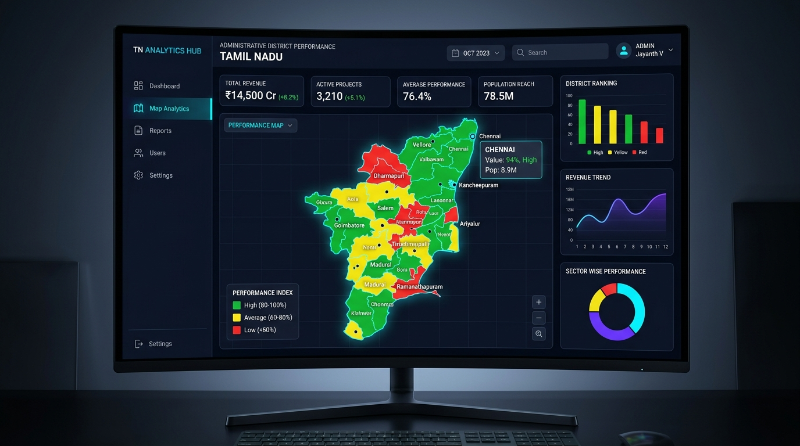

Freelance Client Project (2026)
State Education & Spatial Analytics Dashboard
Delivered under a private freelance client engagement to modernize an executive command analytics dashboard, turning a static HTML prototype into a live, production-grade system covering all 38 districts of Tamil Nadu with school-level drilldowns.
Dynamic choropleth heatmap (Green / Yellow / Red) across 8 performance metrics.
Full 3-tier drilldown UI: District → Block → School.
Data-view toggle between Schools and TNTET Candidate datasets.
Completed all 3 client milestones on schedule within a 20-day freelance build cycle.